Runs
Every time tests are executed, that is a run. This page lists all runs of all your projects, newest first, with search and filters. Open one to see what happened: which tests passed, which failed, the error of each failure, and TraceIQ's guess at the cause.
What it is for
Runs answers "What happened when the tests ran?" The list helps you find a run (last night's, the one for a change, the failed ones). The run's own page helps you understand it, down to the single step that went wrong.
Testers
Open last night's failed run, see which tests failed and read their errors.
Developers
Find the run for their change and see whether the failure is the app, the test or the environment.
Leads
Share a read-only summary of a run, or file a ticket for it, without copying anything by hand.
Where to find it: in the sidebar, open Runs. The page's own heading says Test runs. A run's own page opens when you click a run here, or anywhere else a run is mentioned (Overview, Failure triage, Monitors…).
A test is one journey, such as "Sign in". A suite is a folder of tests. A run executes a whole suite, or a single test, once, in one browser. Each test in it gets its own result.
A tour of the list
The numbers on the screenshot match the sections below.
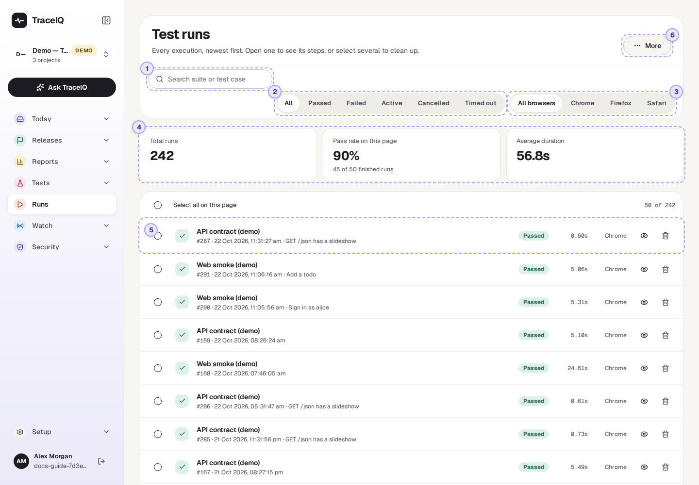
Search
Type part of a suite's or a test's name to show only matching runs. The search matches upper and lower case exactly: "Web" finds "Web smoke (demo)", "web" does not.
Filter by result
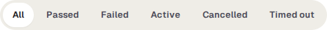
Shows only runs with one result. Each button matches exactly one status:
- Failed shows runs marked Failed only, not those that ended in Error. There is no button for Error; use All.
- Active shows runs that are running right now, not those still queued.
Filter by browser
All browsers, Chrome, Firefox or Safari: the browser the run used. When any filter or a search is set, a Clear button appears next to them.
The three tiles
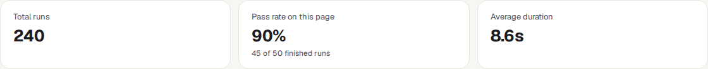
| Tile | What the number means |
|---|---|
| Total runs | How many runs match the search and filters, across all your projects. |
| Pass rate on this page | The share of passed runs among those on the current page of the list (50 by default), counting only runs with a pass/fail answer: cancelled, timed-out, queued and running ones are left out. The line below says how many it is based on. |
| Average duration | The average length of those same runs. |
One run in the list
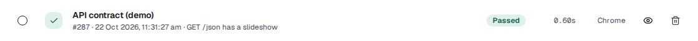
- The name is the suite that ran (or the test, when only one ran). Underneath: the run number, when it started, and the test's name if a single test of a suite ran. Runs of manual tests carry a Manual label and open their own page.
- On the right: the result, how long it took, and the browser.
- Click the row (or the eye button) to open the run. The tick box on the left selects it; the bin button deletes it.
| Result | What it means |
|---|---|
| Passed | Every test in the run did what it should. |
| Failed | At least one test found a problem. |
| Error | Something went wrong around the tests, for example the run could not be started. Treat it like a failure. |
| Running / Queued | Happening now / waiting for a free test machine. |
| Cancelled | Someone stopped it. No verdict. |
| Timed out | It went past TraceIQ's time limit. No verdict. |
More, deleting and pages
- Select runs with their tick boxes (or Select all on this page) and a Delete N selected button appears at the top.
- More → Delete all runs deletes every run in every project where you are an editor, whatever the search or filters show. Use it with care.
- Deleting removes the run with its screenshots, videos and logs, and asks you to confirm first. It is recorded in the audit log.
- What was worked out from deleted runs goes with them once nothing else supports it: failure groups on Failure triage with no failure left, flake scores of tests with no result left (a quarantined or owned test keeps its score), and the days on Flake trends and Dependency health that no remaining run covers.
- At the bottom, the page controls move through the list, and set how many runs a page shows (25, 50 or 100).
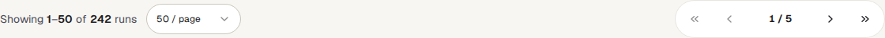
A tour of one run
Clicking a run opens its own page. This one is a failed run of the demo's web suite. The numbers continue from the list above.
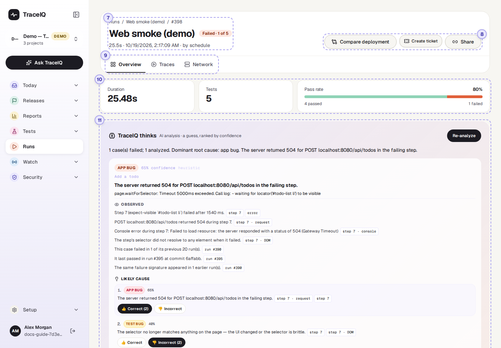
Title and result
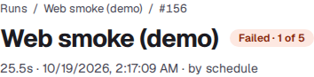
The suite (or test) that ran, and its result: for a failed run, how many of its tests failed. Below: how long it took, when it started, the code version (commit) and branch it tested if it was started from a build pipeline, and who or what started it (by human, by schedule, by ci, by api_agent, by webhook).
The buttons
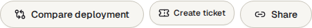
| Button | What it does |
|---|---|
| Compare deployment | Runs the same suite again against another address of your app (say, the new version on a staging site) and shows the two results side by side. |
| Create ticket | Files a ticket for this run in a connected issue tracker (Jira, GitHub or iTop). |
| Share | Makes a read-only link for people without a TraceIQ account. It shows test names, results and timings only; never screenshots, videos, errors or addresses. It expires after the number of days you choose. |
| Cancel run | Only while it runs. Queued tests don't start, and a running test stops before its next step. The run ends as Cancelled and nobody is notified. |
| Force complete | Only for a run that has said "running" for more than 10 minutes, i.e. one that seems stuck. Marks it as finished with an Error. |
The tabs
- Overview (opens first): everything described below.
- Traces: the recordings the run kept, if any: a step-by-step trace you can play back, a video, a file of all network traffic (HAR) to download, and every screenshot. A project records video, traces and network files only when its data settings allow the fullest level of capture.
- Network: the web requests the browser made during the run, grouped, with their status codes.
- Sweep appears only for runs that ran the same tests at several screen sizes or languages.
Duration, tests and pass rate
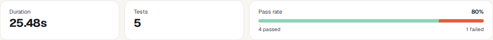
How long the run took, how many tests it held, and the share that passed. The bar is green for passed tests and orange for failed ones. Tests that were cancelled or timed out are not in the pass rate; the line underneath says how many were "not counted".
Above these, banners can appear: the run's data seed (with Re-run with this seed, to repeat it with the same generated test data), a run that is waiting for a shared test environment to be free, a cancelled or timed-out run, or a validation run that tried a suggested fix from Proposals.
TraceIQ thinks (AI analysis)
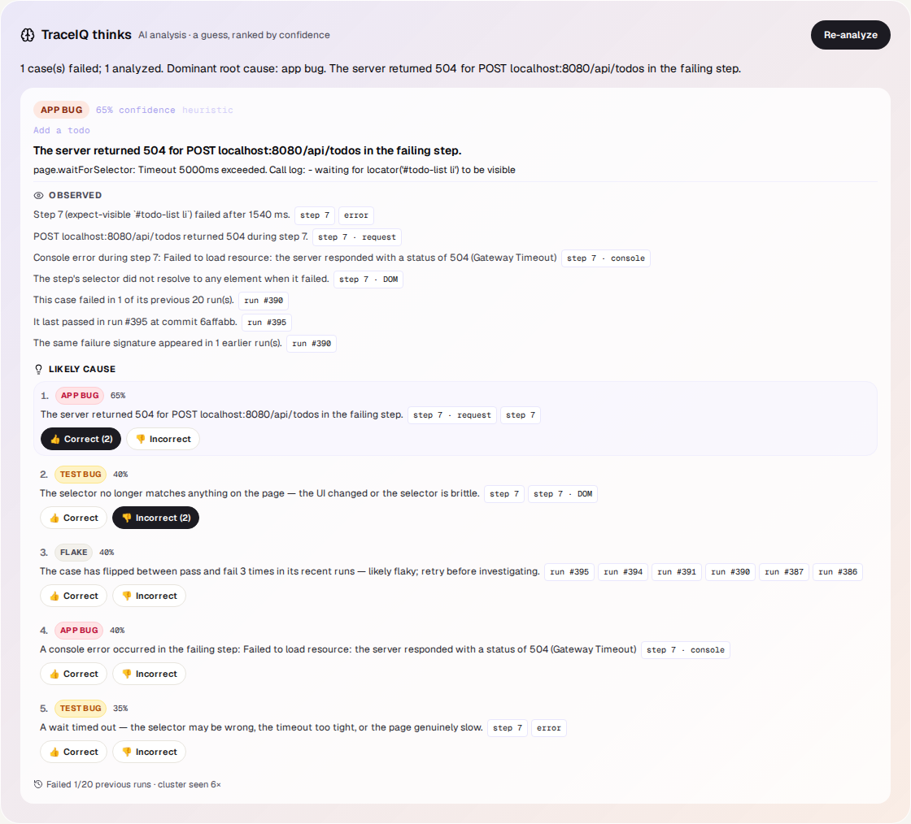
For a failed run (or one that ended in Error), TraceIQ looks at the failures and suggests a likely cause. When a run fails this starts by itself; it uses simple rules always, and an AI model as well when one is set up.
- Each finding has a kind: app bug, test bug, environment, flake or unknown, with a confidence, a short explanation and often a suggested fix.
- Newer findings list what was observed and several possible causes, each pointing at the evidence it is based on. Click a piece of evidence to jump to that step of that test. Editors can mark each cause as right or wrong; those votes feed the Value report.
- Analyze failures (or Re-analyze) runs it again, optionally with another AI provider from the menu next to it. It needs the editor role.
- It is a guess. Read the error and the evidence before acting on it.
The demo's runs have no analysis yet, so the box says "No analysis yet".
Tests in this run
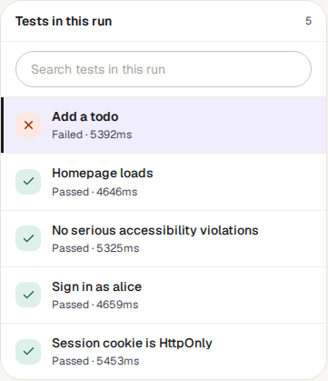
Every test of the run, failed ones first, then the rest, then passed ones; the first is shown on the right straight away. Each row gives the result, what kind of failure it was (see below) and how long it took. The search box filters the list by name (upper and lower case don't matter here).
The selected test
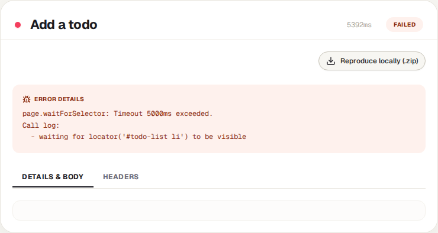
The test's name, result and duration, then whatever the run recorded for it:
- Error Details: the full error message of a failure.
- Retries: when the test was tried more than once, each attempt and its result.
- Step evidence: each step in order with its result, and for the failing step its console messages, failed requests, a screenshot and a piece of the page. How much is kept depends on the project's data settings.
- Reproduce locally (.zip): a download with the test, its settings and a script a developer can run on their own computer. Passwords and keys are never included; the script asks for them.
- Tabs for the request and response details, headers, the test's own media and its network requests, when there are any.
| Kind of failure | What it tells you |
|---|---|
| Test failure | A step or check failed against the app. Look at the app or the test. |
| Setup failed | The suite's preparation steps failed, so the test never ran. |
| Infrastructure | The browser or the test machine failed. Not a verdict on the app. |
| Time limit | TraceIQ's time limit stopped it. Not a verdict on the app. |
The demo's history was generated, so its tests have an error message but no step evidence, screenshots or network requests. A real run shows them here.
Watch it in use
How to…
…find out why last night's run failed
- On the Runs list, press Failed.
- Click the run. The failed test is already selected on the right.
- Read Error Details, then TraceIQ thinks for a likely cause.
- If the same failure appears in many runs, go to Failure triage and deal with it once.
…find the run for a particular suite
- Type the start of the suite's name in the search box, with the same capital letters.
- Add a result or browser filter if you need to.
- Press Clear to see everything again.
…show a run to someone without an account
- Open the run and press Share.
- Choose how long the link should work, then Create link, and copy it.
- Send it. It shows names, results and timings only, and stops working when it expires.
Good to know
- All your projects at once. The list covers every project you have access to, not only the one selected in the sidebar.
- It updates by itself. The list refreshes every 5 seconds. A run's page updates live while it is running, and stops once it is finished.
- Everything is here. Scheduled runs, monitor checks, runs from build pipelines and AI agents, and validation runs for suggested fixes are all listed. Some of them (validation runs) are left out of pass rates and reports elsewhere.
- Who can do what. Anyone with access to a project sees its runs. Cancelling, re-analysing, force-completing and deleting need the editor role; deleting a run you may not edit is refused.
- Old runs may be removed automatically after the number of days set in the project's data settings or by the server administrator.
Related pages
Monitors
The next page in this guide: tests on a timer against the live site.
Failure triage
Failures from many runs grouped by cause, so you fix each problem once.
Overview
The newest runs and the pass-rate trend, at a glance.
Suites
Where tests are written and runs are started.